4 ANOVA Designs (3)
When we have finished this Lab, we should be able to:
4.1 Two-way between-subjects Analysis of Variance (Two-way ANOVA)
A research design is not limited to examining the effects of a single independent variable. In this section, we will explore how to incorporate a second independent variable. A design that includes multiple independent variables is known as a factorial design, where each level of one independent variable is combined with each level of the other.
After obtaining a significant ANOVA result, it is essential to conduct post hoc tests that account for the number of comparisons to ensure accurate statistical interpretation.
4.1.1 Importing data
Assume that researchers are interested in exploring the role of analogical thinking in the problem-solving skills of children and adolescents. The researchers sample 21 students from primary school (6th grade students from “Dimotiko”, ages 11-12) and 21 students from secondary school (3rd grade students from “Gymnasium”, ages 14-15). The students are then randomly assigned to one of three groups, each consisting of 7 students: a control group, experimental group 1 (exposure to similar examples without instructions), and experimental group 2 (exposure to similar examples with instructions). The outcome measured is the number of mistakes made while attempting to solve the problems.
Open the dataset named “mistakes” from the file tab in the menu (Figure 4.2).
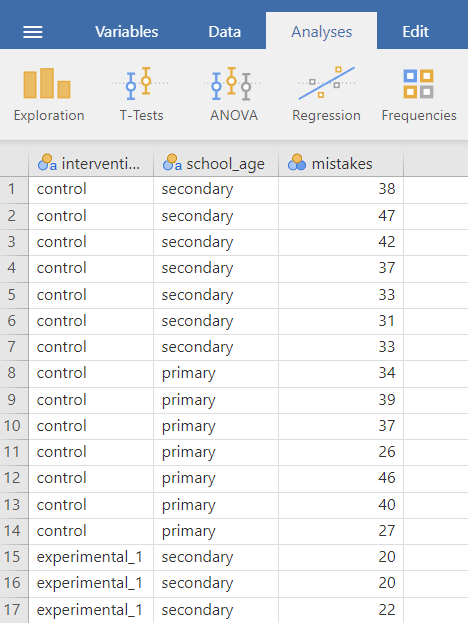
We prepare the data as follows (Figure 4.3):
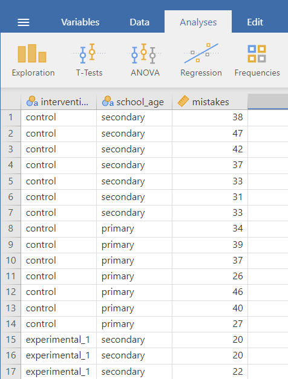
4.1.2 Research question
The question of interest is whether the effect of school age and instructions on the number of mistakes. Specifically, we want to answer the following questions:
Does the number of mistakes differ based on instructions?
Does it differ based on school age?
Does the effect of instructions on the number of mistakes depend on school age (moderator)?
4.1.3 Hypothesis testing for the one-way ANOVA test
4.1.4 Assumptions
Normality of Residuals: The number of mistakes should be approximately normally distributed within each group (i.e., for each combination of gender and residential community).
Homogeneity of Variance (Homoscedasticity): The variance of number of mistakes should be approximately equal across all groups. (also named as homogeneity of variance or homoscedasticity).
4.1.5 ANOVA (omnibus analysis)
On the Jamovi top menu navigate to
flowchart LR A(Analyses) -.-> B(ANOVA) -.-> C(ANOVA)
as shown below in Figure 4.4.

In the ANOVA dialog box, highlight intervention in the left panel and drug it to the the Dependent Variable. Then highlight the gender and school_age and drug them to the Fixed Factors (Figure 4.5). Additionally, check \(\eta^2\).
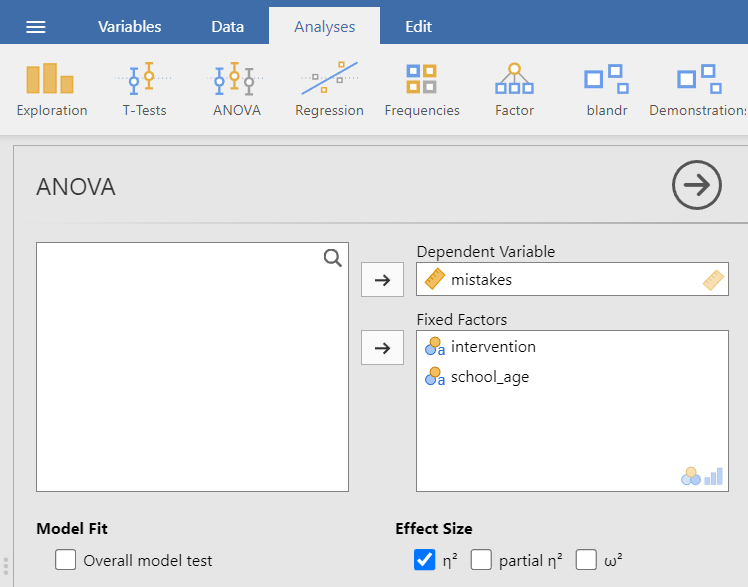
4.1.6 Descriptive statistics and plots
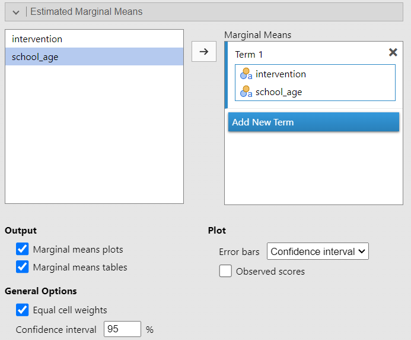
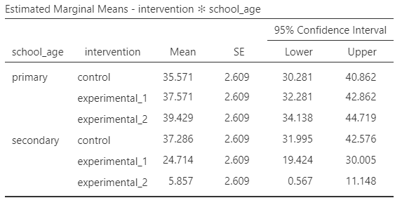
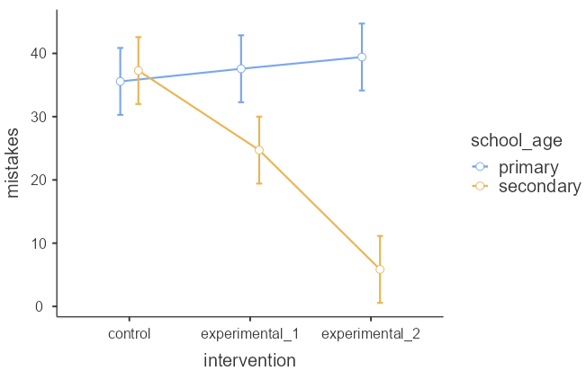
We have created an interaction plot that illustrates the simple effects of intervention for primary and secondary school students. The resulting plot shows an interaction because the lines are not parallel. In this example, school age is a moderator.
Assumptions Checks
Click the Assumptions Checks, and check Homogeneity test, Normality test, and Q-Q plot (Figure 4.9).

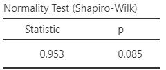
The Shapiro-Wilk test of normality suggests normal distributions (p=0.08 > 0.05; \(H_o\) is not rejected).
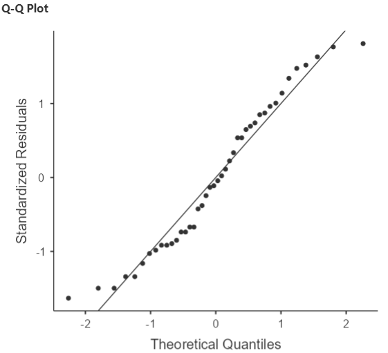
The data points mostly fall along the diagonal line, indicating that the residuals are approximately normally distributed.
- Equality of variances
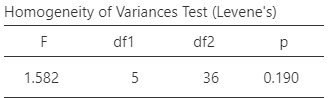
Since p = 0.19 > 0.05, the \(H_0\) of the Levene’s test is not rejected and the variances are comparable.
ANOVA table
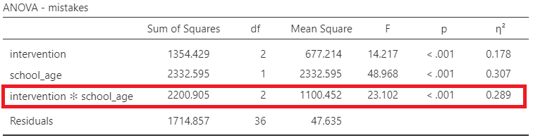
We observe that both main effects—intervention (F = 14.2, p <0.001) and school age (F = 48.9, p <0.001), are significant. Additionally, the interaction is also significant (F = 23.1, p <0.001).
A key principle in interpreting and reporting factorial analysis results is that interactions take precedence over main effects. This is because interactions offer a more detailed and comprehensive understanding of the data.
Therefore, we can conduct a simple effects analysis (which can be performed in the Linear Models module) and follow up with post hoc tests.
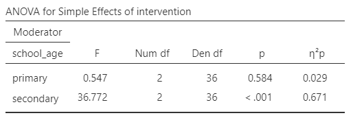
The number of mistakes in the intervention groups differs significantly only among secondary school students (F = 36.7, p <0.001).
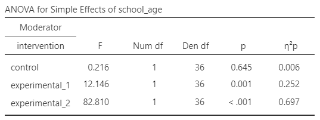
The number of mistakes between primary school and secondary school students are significant for the experimental groups (F = 12.2, p = 0.001 and F = 82.8, p <0.001).
4.1.7 Post hoc tests
Click the Post Hoc Tests, then highlight the gender x residence in the left panel and click it over the the right panel. Check Tukey correction.
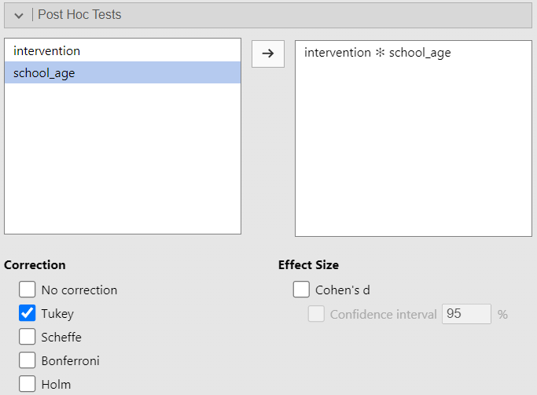
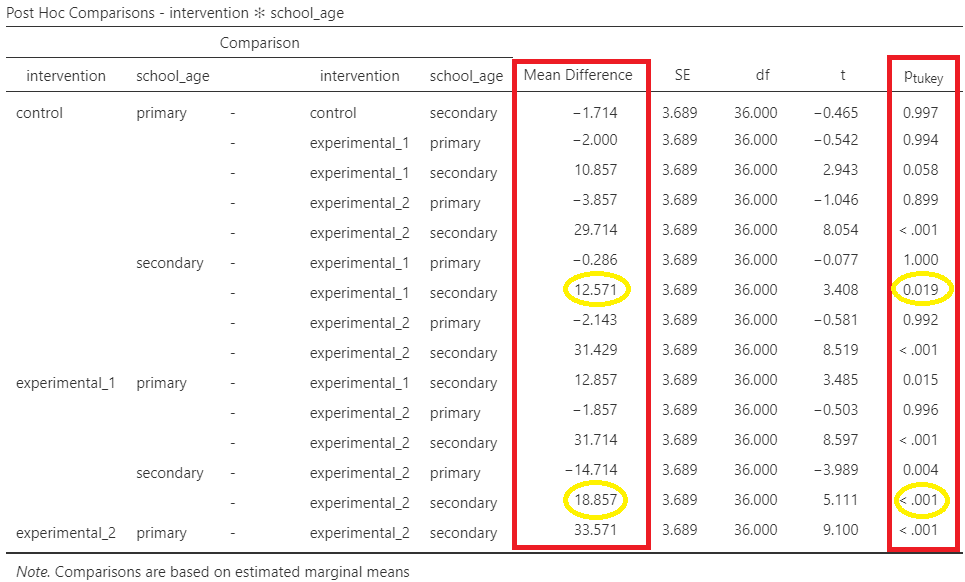
Interpretation
Simple effects tests were conducted using the Tukey adjustment to maintain an alpha level of 0.05. Results showed that the effect of instructions on the number of mistakes depends on school age.
Primary school students showed a relatively stable number of mistakes across all three groups, with their mistakes remaining high even with experimental interventions.
Secondary school students demonstrated a significant decrease in mistakes. Specifically, there was a significant reduction in mistakes when comparing the control group to the group exposed to examples (MD = 12.6, p = 0.019). Adding instructions led to an even greater reduction in mistakes (MD = 18.9, p <0.001), indicating that explicit guidance further enhanced their problem-solving skills.
Additionally, secondary school students made significantly fewer mistakes than primary school students in both experimental interventions, suggesting that older children may have a stronger ability to apply analogical reasoning in problem-solving after being exposed to similar examples and instructions.